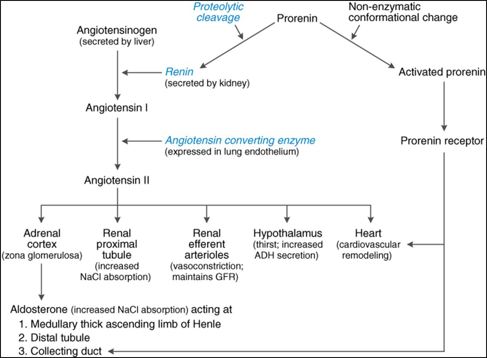
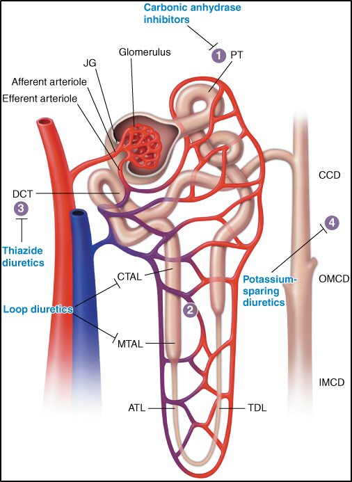
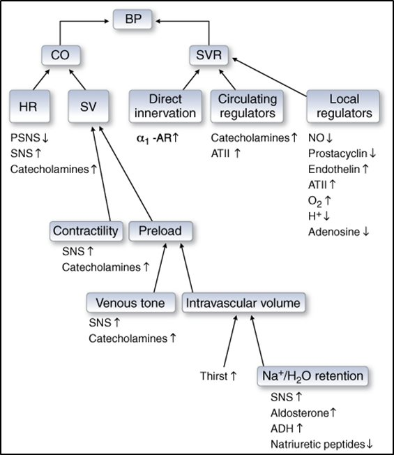
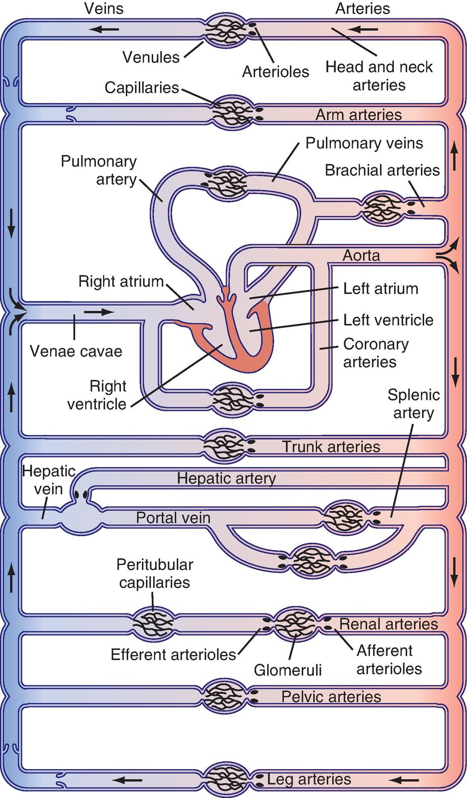

Kidney volume control · MAP = CO × PVR
Blood Pressure: the Dials Drugs Turn
Kidneys: the long-term volume regulator
The ANS is the fast responder; volume is the long-term answer. For cardiovascular purposes, the nephron's job is sodium (and water) handling. Angiotensin II acts on the adrenal cortex (aldosterone), proximal tubule (↑ NaCl reabsorption), efferent arterioles (constrict, maintain GFR), hypothalamus (thirst, ADH) and heart (remodelling).
The kidney's role in BP is so large that hypertension can be transplanted: a kidney from a donor with renal-based hypertension can make the recipient hypertensive.


ACE has a second job worth remembering now: it is also kininase II, the enzyme that inactivates bradykinin — the basis of ACE-inhibitor cough and angioedema in the hypertension lecture.

MAP = CO × PVR
Perfusion is what we are protecting; MAP is how we measure it.


| Dial | Raise it | Lower it |
|---|---|---|
| Heart rate | Antimuscarinics · β agonists / catecholamines · PDE3 inhibitors | Muscarinic agonism · β antagonists · Ca²⁺ channel blockers |
| Preload — venous tone | Sympathetic tone | NO (nitrates, nitroprusside) |
| Preload — intravascular volume | Thirst / fluids | RAAS blockade · diuretics |
| Contractility | Sympathetic / catecholamines (β1) | β antagonists · Ca²⁺ channel blockers |
| SVR | Direct α1 innervation · circulating catecholamines · AT-II · Ca²⁺ channels | α1 antagonists · central α2 agonists · NO · RAAS blockers · Ca²⁺ channel blockers |

Preload, afterload and heart failure
The circuit has a resistance side (arterioles) and a capacitance side (veins). Change afterload to change impedance; change preload to change how hard the heart contracts (Frank–Starling). In heart failure: lower afterload → less contractility needed to move blood forward → ↑ stroke volume. These same levers give the mortality benefits in heart failure later in the block.
Lose volume → ↓ preload → ↓ CO → BP falls. Acute: constrict peripheral vessels (α1) + ↑ heart rate (β1). Long-term: RAAS + thirst restore volume. In hypertension the body treats the high pressure as its set point and uses these same mechanisms to defend it — the theme of the next lecture.
Q: A drug dilates arterioles but not veins. Which determinant of blood pressure does it change, and what would the heart of a patient with systolic heart failure gain?
It lowers SVR / afterload. Lower impedance means the failing ventricle ejects a larger stroke volume for the same contractility.